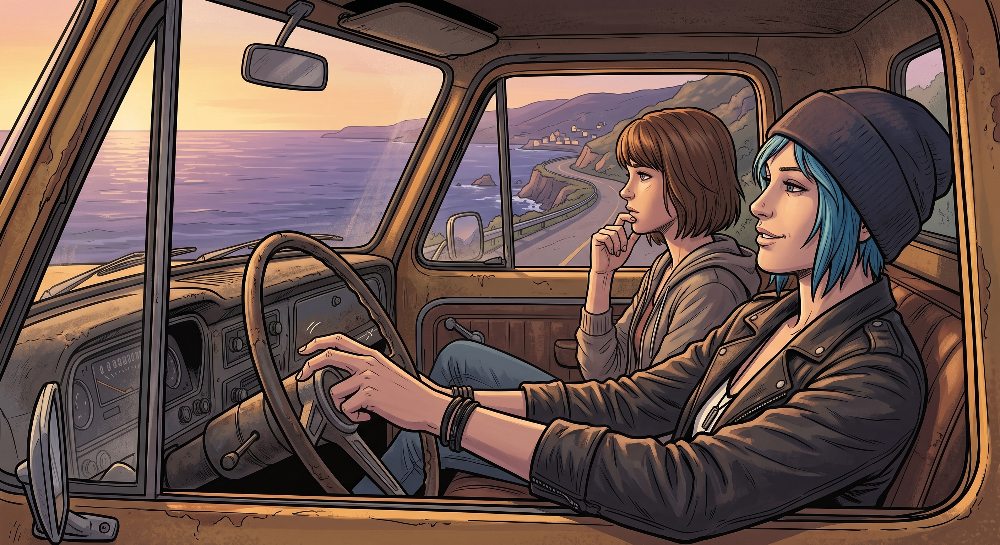

特批假期

一、公關算盤
新任 Wells 校長上任沒多久,就聽說了 Max Caulfield 這個名字——那個在暗房慘案裡,親眼見證真相、協助破案的核心證人。
「這是個好機會,」他在辦公室裡對著教務主任反覆琢磨,「一個從創傷裡走出來的學生,如果能公開表現出『校方全力支持身心康復』的姿態,對重建學校形象,絕對是一劑強心針。」
他很快擬定了一份措辭懇切的公告,親自把 Max 叫進辦公室。
二、特批的假期
「Caulfield 同學,」Wells 校長的語氣裡帶著刻意的溫和,「經歷了這麼多事,妳的身心健康,是學校最重視的一環。我決定,特批妳兩週的『康復假期』,不計入出席率,妳可以好好休息、放鬆。」
Max 愣了一下,一時沒反應過來這份「善意」背後的算計,只能有點茫然地道了謝。
走出校長室,她把這件事說給 Chloe 聽,兩人對視一眼,都從對方眼裡讀出了同一個念頭——這份假期,顯然是校方拿來當公關素材用的,但難得白撿兩週自由,不用白不用。
三、心心念念的地方
「兩週假期,」Chloe 窩在皮卡駕駛座上,手指在方向盤上敲著節奏,「妳想去哪?」
Max 望著窗外,想了想,聲音裡帶著一絲埋藏已久的期待。
「波特蘭,」她說,「還記得嗎?那時候我們說過,想找機會一起去看看。」
Chloe 的表情微微一頓,隨即笑了,眼底閃過一絲複雜卻溫暖的情緒。
「記得,」她說,「那就走吧,老娘這就去準備行李。」
四、出發前的碎念
Joyce 聽說兩人要出遠門,雖然有些不放心,還是幫忙打包了一堆路上吃的乾糧;David 則翻箱倒櫃地找出一張泛黃的公路地圖,一邊仔細標註著沿途幾個「值得留意的地點」,一邊碎碎念著各種行車安全注意事項。
「兩週而已,」Chloe 被念得有點不耐煩,「我們又不是第一次出遠門。」
「有備無患,」David 頭也不抬,繼續在地圖上畫著記號。
出發那天早上,老皮卡載著簡單的行李,緩緩駛出阿卡迪亞灣。Max 坐在副駕駛座,望著窗外逐漸遠去的小鎮,心裡那份說不清道不明的期待與忐忑,伴隨著引擎規律的震動,一路朝著北方延伸而去。
「波特蘭,」她輕聲說,像是在確認這件事終於要成真,「我們這次真的要去了。」
「嗯,」Chloe 握著方向盤,目光平靜地望向前方的公路,「這次,真的要去了。」